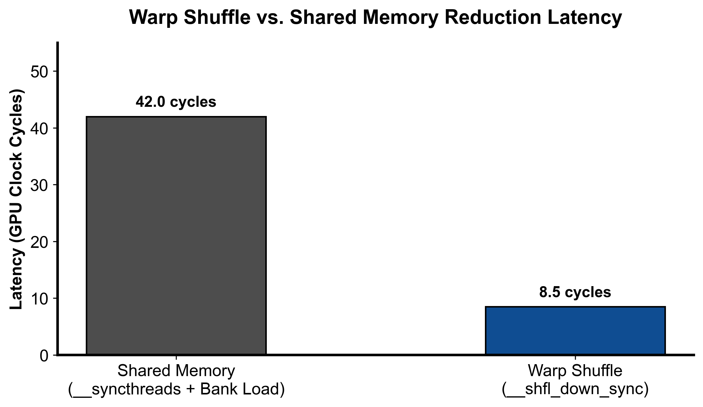

第 2 课：Warp/Block 归约与两阶段求和
参考答案版：包含完整代码实现与问答题深度参考解析。建议先独立完成练习题后再展开核对。
本课目标与完成标准
学完后你应能：解释 shuffle、shared memory 和跨 block 两阶段归约，并实现 warp reduce 核心。
通过必须同时满足：
- 独立补齐本课唯一的代码填空题，并通过给定检查；
- 三个问答题均说明因果链，而不是只报术语；
- 能指出至少一个正确性边界和一个性能取舍；
- 总分不低于 8/10，且没有一票否决级概念错误。
前置关系
- 课程前置：C/C++、线性代数、基本并行编程
- 本课在路线中的作用：归约把多个元素结合成一个结果；CUDA 中先在线程寄存器累加，再逐级在 warp、block、grid 层合并。
核心心智模型
核心操作与执行流程图解

图 2-1：Warp Shuffle 与 Shared Memory 两阶段规约时延对比（基于 scientific-figure-making 绘制）
sequenceDiagram
autonumber
participant T as Block 内各 Warp 线程
participant S as 共享内存 (Shared Memory)
participant W0 as Warp 0 (主归约 Warp)
participant G as 全局内存 (GMEM Output)
T->>T: 各 Warp 独立执行 __shfl_down_sync 归约
T->>S: 各 Warp 的 Lane 0 将局部和存入 SMem[warp_id]
Note over T,S: __syncthreads() 保证写完成
S->>W0: Warp 0 读出各 Warp 局部和
W0->>W0: Warp 0 再次执行 Shuffle 归约
W0->>G: Block 内 Lane 0 原子累加或直接写出最终标量图 2-2：Block 级两阶段求和（Warp 内洗牌 + 跨 Warp 归约）执行时序流
核心操作与执行流程图解
图 2-1：Warp Shuffle 与 Shared Memory 两阶段规约时延对比（基于 scientific-figure-making 绘制）
图 2-2：Block 级两阶段求和（Warp 内洗牌 + 跨 Warp 归约）执行时序流
1. 它是什么，解决什么问题
归约把多个元素结合成一个结果；CUDA 中先在线程寄存器累加，再逐级在 warp、block、grid 层合并。
2. 它如何工作
warp shuffle 直接交换寄存器；每个 warp 的 lane 0 写 shared memory，warp 0 再归约；block 间需第二个 kernel 或原子操作。
3. 正确性条件与常见误区
shuffle mask 只能包含实际参与的 lanes；本实现要求完整 warp，且浮点加法顺序变化会产生微小误差。
4. 性能与工程取舍
两阶段多一次 launch 与临时缓冲；atomic 简单但争用大，cooperative groups 需要额外约束。
具体演示
256 线程先得到 8 个 warp partial，再由 warp 0 合并为一个 block partial；grid 有 B 个 block 时输出 B 个数。
请在阅读后先合上这一节，用自己的语言复述“输入状态 → 中间状态 → 输出状态”，再做练习。
实践任务：唯一代码填空题
补齐 warp shuffle 表达式。
规则：只能修改 TODO/______ 所在位置；不要删除断言或放宽误差。代码注释说明了每个边界条件。
Code
%%writefile /tmp/02_reduce_sum.cu
#include <cuda_runtime.h>
namespace {
// Reduce Sum: 把 input[0:n] 求和。
//
// 面试重点：
// 1. 每个线程先在寄存器里累加多个元素，减少后续 reduce 的数据量。
// 2. warp 内用 shuffle reduce。
// 3. 跨 warp 用 shared memory 保存每个 warp 的 partial sum。
//
// 这个文件实现的是单 stage reduction：
// 每个 block 输出一个 partial sum 到 partial[blockIdx.x]。
// 如果 partial 还有多个元素，可以继续对 partial 再 launch 本 kernel。
template<int BLOCK_SIZE>
__device__ __forceinline__ float warp_reduce_sum(float val) {
#pragma unroll
for (int offset = 16; offset > 0; offset >>= 1) {
val += ______; // TODO: 从 offset lane 读取并累加
}
return val;
}
template<int BLOCK_SIZE>
__device__ __forceinline__ float block_reduce_sum(float val) {
constexpr int NUM_WARPS = (BLOCK_SIZE + 31) / 32;
__shared__ float smem[NUM_WARPS];
int lane = threadIdx.x & 31;
int warp = threadIdx.x >> 5;
val = warp_reduce_sum<BLOCK_SIZE>(val);
if (lane == 0) {
smem[warp] = val;
}
__syncthreads();
if (warp == 0) {
val = (lane < NUM_WARPS) ? smem[lane] : 0.0f;
val = warp_reduce_sum<BLOCK_SIZE>(val);
}
return val;
}
template<int BLOCK_SIZE>
__global__ void reduce_sum_kernel(
const float* __restrict__ input,
float* __restrict__ partial,
int n
) {
int tid = threadIdx.x;
int idx = blockIdx.x * blockDim.x + tid;
int stride = blockDim.x * gridDim.x;
float local_sum = 0.0f;
// grid-stride loop：每个线程累加多个元素。
// 比“一线程一个元素然后立刻 reduce”更高效，因为寄存器累加很便宜。
for (int i = idx; i < n; i += stride) {
local_sum += input[i];
}
float block_sum = block_reduce_sum<BLOCK_SIZE>(local_sum);
// 一个 block 只写一个 partial sum，后续由下一轮 kernel 再归并。
if (tid == 0) {
partial[blockIdx.x] = block_sum;
}
}
} // namespace
void launch_reduce_sum_stage(
const float* input,
float* partial,
int n,
int num_blocks,
cudaStream_t stream
) {
constexpr int BLOCK_SIZE = 256;
reduce_sum_kernel<BLOCK_SIZE><<<num_blocks, BLOCK_SIZE, 0, stream>>>(
input, partial, n
);
}检查方法
有 CUDA 环境时执行 nvcc -std=c++17 -c /tmp/02_reduce_sum.cu -o /tmp/02_reduce_sum.cu.o；无 CUDA 环境时只做静态审查并登记待验证。
提交时请给出：补齐后的代码、实际运行输出（环境不可用时注明“仅静态审查”）以及对失败用例的解释。
Q1
不要背定义：请从输入、状态变化和输出三个阶段解释“Warp/Block 归约与两阶段求和”的工作机制。
你的答案：
Q2
若 blockDim 不是 32 的整数倍，固定 0xffffffff mask 有什么风险？
你的答案：
Q3
超大数组求和时，你会选择递归 kernel 还是 atomic？说明依据。
你的答案：
评分与通过规则
- 代码 4 分：正常输入 2 分，边界输入 1 分，解释实现 1 分；
- Q1～Q3 各 2 分；
- 一票否决：结果碰巧正确但核心因果链错误、删除边界检查、把未运行结果说成实测。
需要提示时按四级机制请求：概念区域 → 具体方向 → 关键局部 → 完整答案。